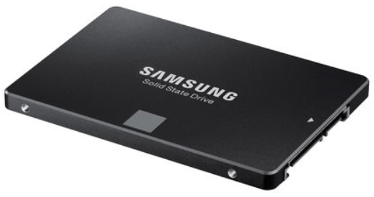
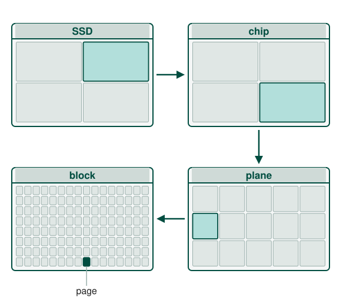
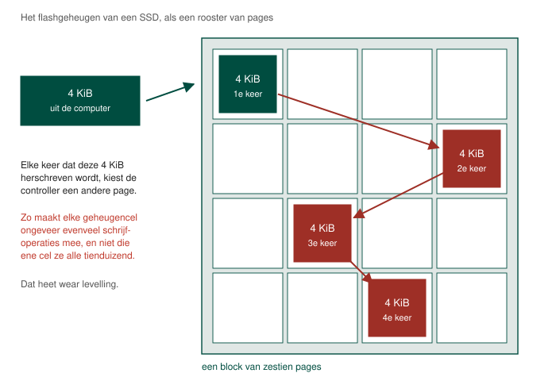

Een Solid State Drive of SSD is een opslagmedium dat geen bewegende onderdelen bevat. De seek time en rotational delay die aanwezig zijn bij een klassieke harde schijf, zijn hier dus niet meer van toepassing.
Wel is er nog een zogenaamde toegangstijd of access time maar deze bedraagt slechts 0,1 milliseconde. Een SSD zal dus, zonder er veel moeite voor te moeten doen, minstens 130x sneller werken dan een klassieke harde schijf. Een nieuwe computer of laptop kopen zonder een SSD harde schijf is vrijwel nooit een goed idee.
Data wordt bij een SSD opgeslagen in verschillende NAND flash geheugencellen die op hun beurt uit floating gate transistors bestaan. Wat dit juist inhoudt hoef je niet te kennen maar onthoud wel dat dit geheugen, in tegenstelling tot RAM geheugen, niet volatiel is. De waarden blijven behouden zelfs als de harde schijf spanningsloos wordt gezet.
De NAND geheugencellen worden in roostervorm aan elkaar gekoppeld. Een volledig rooster wordt een block genoemd en een individueel onderdeel van het rooster is een page.
Een page heeft meestal een grootte van 2 KiB, 4 KiB, 8 KiB of 16 KiB en een blok beslaat uit 128 tot 256 pagina's. Een blok is dus, bij moment van schrijven, minimum 256 KiB en maximum 4096 KiB.
Een verzameling aan blocks is een plane en een SSD geheugenchip bestaat uit verschillende planes.

Omdat een NAND geheugencel slechts een eindig aantal (ongeveer 10000) schrijf operaties kan doorstaan worden beschreven bits automatisch verspreid over de harde schijf. Iedere geheugencel maakt dan ongeveer evenveel schrijf operaties mee.
Dit heet men wear levelling. Hoewel 10000 weinig lijkt zijn fabrikanten er van overtuigd dat een SSD makkelijk 7 jaar mee kan gaan bij intensief gebruik. De voorwaarde is wel dat de schijf niet al te vol staat zodanig dat er gespreid kan worden.

Bij SSD's zijn er ook vertragingen, al zijn die misschien iets moeilijker om te begrijpen. Eén van de bepalende factoren voor de vertraging is de hoeveelheid bits per NAND geheugencel er worden opgeslagen.
Een single level cell (SLC) ondervindt minder vertraging dan een SSD met meerdere bits per cel. Een typische triple level cell (TLC) leest data 4 keer zo traag en schrijft data 6 keer zo traag als een SLC.
Bij een SLC moet de harde schijf enkel nagaan als de waarde in de cel 0 of 1 is. Bij een multi level cell (MLC) worden twee bits opgeslagen per cel dus hier kunnen vier mogelijkheden optreden: 00, 01, 10 of 11. Bij een TLC worden er 3 bits per cel opgeslagen dus hier kunnen 8 mogelijkheden optreden.
Meer bits per cel kost ook levensduur: hoe fijner de spanningsniveaus in een cel uit elkaar liggen, hoe eerder slijtage ze niet meer uit elkaar te houden maakt. Een SLC haalt daarom meer schrijfcycli dan een MLC en een MLC meer dan een TLC.
Een SLC zal je doorgaans enkel terugvinden in servers. Voor particuliere toepassingen worden MLC's of TLC's gebruikt. Als het budget het toelaat kies je best voor een MLC.
Een SSD kan heel snel data schrijven naar een lege page maar data overschrijven in een page duurt een heel pak langer.
Overschrijven is immers gelijk aan wissen en schrijven. Het wissen is de meest tijdrovende operatie op een SSD. Dit komt doordat, wanneer we een page wissen, er een relatief hoge spanning op de geheugencellen komt te staan en dit zorgt ervoor dat ook de cellen rondom de bedoelde cellen onder spanning komen te staan. In de praktijk zorgt dit ervoor dat het ganse block wordt gewist.
Vooraleer we wissen moeten we dus eerst het volledig block kopiëren naar een ander, bij voorkeur leeg, block. Dit betekent dat we, wanneer we overschrijven, we eerst een schrijfoperatie moeten doorvoeren van niet één pagina (bv. 16 KiB) maar wel van een volledig blok (bv. 4096 KiB)! Dit wordt in het vakjargon write amplification genoemd.
In bovenstaand hoofdstuk hebben we het gehad over write amplification. In het beste geval werden de pages die we wilden updaten gekopieerd naar een leeg block. Omdat een wis operatie bij een SSD lang duurt (3 ms in vergelijking met 10µs voor lezen en 100 µs voor schrijven) wordt deze vaak uitgesteld. De page wordt dan simpelweg gemarkeerd als verwijderbaar.
Indien er geen vrije pagina's beschikbaar zijn zal de SSD controller scannen naar verwijderbare pagina's. Eenmaal gevonden herhaalt zich bovenstaand principe. Het spreekt echter voor zich dat, wanneer dit fenomeen zich voordoet, de schrijfsnelheid van een SSD drastisch daalt! Dit wordt ook wel de write cliff genoemd.
Moderne SSD's lossen dit op door aan garbage collection te doen. Wanneer ze niet zwaar belast worden gaat de controller actief op zoek naar te verwijderen pagina's en wist deze.
Een tweede proces dat zorgt voor minder vertragingen heet TRIM. Dit commando laat een besturingssysteem toe om tegen de SSD controller te zeggen dat bepaalde pages niet herschreven moeten worden wanneer een block wordt gewist. Dit verlaagt de data die door de schijf moet geschreven worden en verhoogt bijgevolg de snelheid en de levensduur van de SSD.